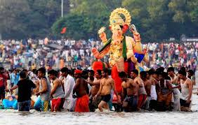

Ganesh Chaturthi also known as Vinayaka Chaturthi is one of the important Hindu festivals celebrated throughout India with a great devotion. This day is celebrated as the birthday of Lord Ganesh, the elephant-headed son of Lord Shiva and Goddess Parvati. Lord Ganesh is the symbol of wisdom, prosperity and good fortune.
Ganesh Chaturthi is celebrated on Shukla Chaturthi of the Hindu month of Bhadra (generally falls between August and September). This festival is celebrated by Hindus with a great enthusiasm. People bring idols of Lord Ganesh to their homes and do worship. The duration of this festival varies from 1 day to 11 days, depending on the place and tradition. On the last day of the festival the idols are taken out in a colorful and musical procession and immersed traditionally in water.
As per Hindu mythology Lord Ganesh is considered as "Vigana Harta" (one who removes obstacles) and "Buddhi Pradaayaka" (one who grants intelligence). This festival is very important for students, they worship Lord Ganesh to illumine their minds.